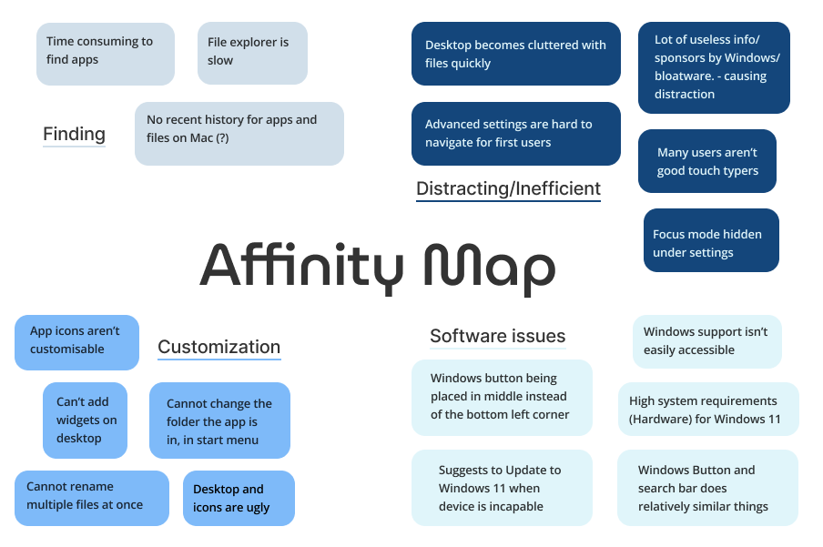
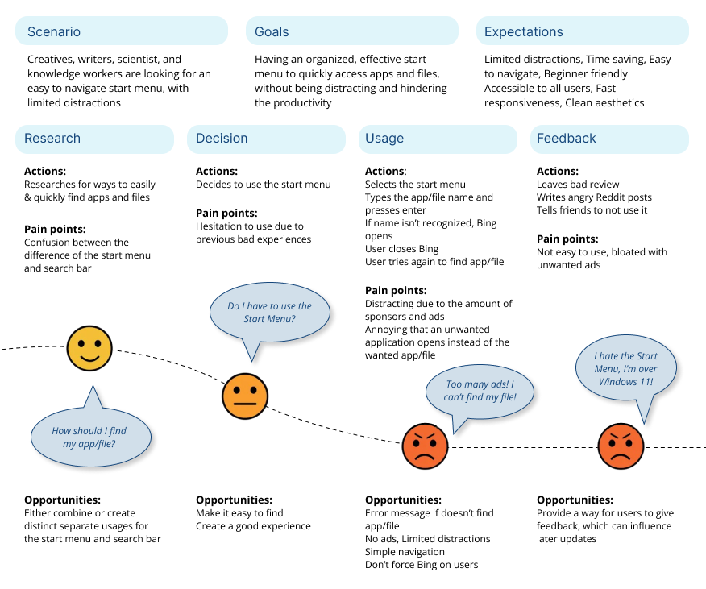
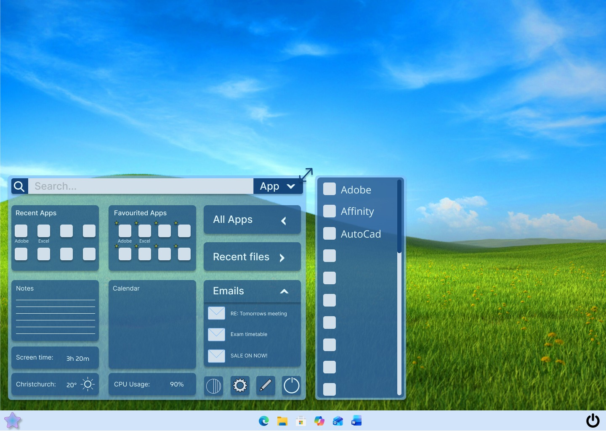
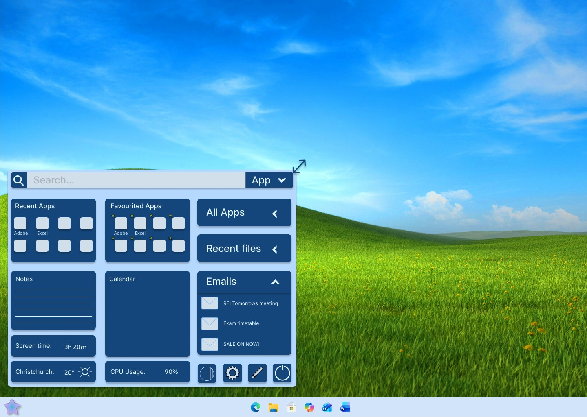

UX report
By Kaitlyn Gibson, Misato Hasegawa, & Chloe Grey
Introduction
This report will be covering several UX issues the users of Windows 11 are facing. We will be focusing on the UX of the “Windows Start Menu” and the “Windows Search Bar”. The purpose of this report is to find a solution to reduce the stress and annoyance of Windows 11 software. Our target audience are scientists, writers and the professional creatives of the future, meaning we must keep the user experience as effective as possible for these professional users. We will be discussing how to improve from Windows 11 to create our OS System that will solve all the current problems our clients face.
Problem statement:
The aim of this report is to understand how users interact with the Windows Start Menu, and where we can improve the design and functionality to support the next generation of professional creatives, writers, scientists and knowledge workers to give a frustration free experience. This will include a possible complete change in the software and software interface for user experience to improve.
Background research
The design of the Windows Start Menu has caused frustration for many
users since the release of Windows 11. Even a former Microsoft director
of user experience, Jensen Harris, shared his frustrations with the
design of the Start Menu,
“The bigger issue here though: why are there banner ads in the Start menu?”
[1]
Users online state issues with the amount of bloatware that appears when you use the Search feature:
“I do hate the push to display trending content on my face. If I wanted to see that stuff I would open a browser.”
[2]
“Another flaw in Windows 11 is the addition of the Recommended section in the Start menu, which just houses the things Microsoft thinks you'll want to use, like your frequent apps and recent files, but also ads for other apps”
[3]
User's also find that having both a start menu icon and a search bar is too much, as they do relatively similar things
“Honestly, search icon/box is just redundant and pointless.
You can open start menu, start typing and it will automatically switch
to search."
[2]
Conflicting results from file explorer, OneDrive and web results in the
windows search bar is also inconvenient. Because it isn’t ordered in
result types, it can be disturbing when you are for example looking for
a specific file, but it shows web results at the top.
The position of the Windows Start Menu button changed from the left to the middle in Windows 11, which many found it was hard to adapt to, but it also affects the overall user experience.
"While the bottom-left corner was already super easy to access, you could also build motor memory for its location. All you need to do is remember 'flick to the lower-left corner, click'. So efficient! Well, on Windows 11, not only do you have to be much more precise in trying to click the start menu button, but it also moves around sometimes."
[4]
Due to the new centered taskbar, the positon of each icon often changes regulary.
“With Windows 11’s centered taskbar, you can no longer build motor memory for application locations since their locations are always displaced depending on how many other programs are running at the same time.”
[4]
This again makes it hard for users to quickly and efficiently open applications. Creating an consistant navigation bar and start menu would already be a huge improvement.
Lastly, all users are unique, and all need different things. Some may want interfaces that have heaps of their apps/files, and some may want a more minimal approach. Due to the lack of customization on Windows 11, users are forced to use their version of a Start Menu, with little able to change.
“My tools force me to adapt my thoughts to their rigid paths and structures. “
[5]
Even with little things like if they want darkmode, it isn't always consistant throughout the interface. For example when in the advanced settings, it is always white and styled in a dated way, which isn't very user friendly. Or even when just transfering files, the window is still in white.
 Reference 3
Reference 3
"Among the elements that don't respect dark mode we have the Control Panel, File Explorer dialogs (such as Properties, Options, and even file transfers), Device Manager, and more."
[3]
The range of annoyances other users have experienced led us to create a
survey to help us gain insights on the frustrations that the Windows
Start Menu had for people around us.
The main issues respondents had with the Windows Start Menu
were:
- A lot of useless info/sponsors by Microsoft/bloatware (100%)
- Ads are a huge distraction (80%)
- Annoying to remove apps (50%)
- Desktop becomes cluttered with files quickly (40%)
- Can't add widgets to desktop (40%)
This helps to give us a direction to what users of Windows OS are
wanting, helping us create a better UX experience for our proposed OS
design.
Affinity map
To help us find a direction to explore, we created an affiniity map, to summarise our brainstorming and research.

Click image to enlarge
The affinity map contains four main groups:
1. Finding issues: 'Time
consuming to find apps', 'File explorer is slow', 'No recent history for
apps and files on Mac (?)'.
2. distracting/inefficient: 'Desktop becomes
cluttered with files quickly', 'Lots of useless info/sponsors by
Windows/bloatware - causing distraction', 'Advanced settings are hard to
navigate for first users', 'Many users aren't good touch typer's',
'Focus mode hidden under settings'.
3. Software issues: 'Windows support
isn't easily accessible', 'Windows button placed in middle instead of
left corner of taskbar', 'High system requirements (Hardware) for
Windows 11', 'Suggests to update to Windows 11 when device is
incapable', 'Start menu and search bar does relatively similar things'.
4. Customization: 'App icons aren't customizable', 'Can't add widgets on
desktop', 'Cannot change the folder the app is in, in the start menu',
'Cannot rename multiple files at once', 'Desktop and icons are ugly'
From our Affinity Map, we found out that there are several issues with
the Windows 11 software, which were not a problem in Windows 10.
System/Hardware requirements for Windows 11 Windows Start Menu and
Search Bar
The start menu is currently not very reliable with finding apps or
files, and this is frustrating for users.
We also can see from looking at the Distracting/Inefficient section that
the Windows 11 UX is not beginner friendly. Examples of this being many
advanced settings being fairly hidden, many distracting information such
as ads, and desktop quickly becoming cluttered.
Lastly, we found that there is a lack of customization available with
the Windows Start Menu and the Search Bar, due to not being able to edit
your start menu to suit your lifestyle, so users may either find the
start menu too filled with stuff, or not filled enough.
User journey map
To help us understand the emotions, pain points, and feelings that users
experience while using the Start Menu, we created a journey map for
general users and used it to identify issues with the current Start Menu
and where we could improve for our proposed solution.

Click image to enlarge
The user journey map contains three top groups: 1. Scenario: 'Creatives,
writers, scientist, and knowledge workers are looking for an easy to
navigate start menu, with limited distractions' 2. Goals: 'Having an
organized, effective start menu to quickly access apps and files,
without being distracting and hindering the productivity' 3.
Expectations: 'Limited distractions, Time saving, Easy to navigate,
Beginner friendly. Accessible to all users, Fast responsiveness, Clean
aesthetics.' And also contains the user journey in four stages: 1.
Research: Actions: 'Researches for ways to easily & quickly find apps
and files' Pain points: 'Confusion between the difference of the start
menu and search bar' Opportunities: 'Either combine or create distinct
separate usages for the start menu and search bar' 2. Decision: Actions:
'Decides to use the start menu' Pain points: 'Hesitation to use due to
previous bad experiences' Opportunities: 'Make it easy to find. Create a
good experience' 3. Usage: Actions: 'Selects the start menu. Types the
app/file name and presses enter. If name isn’t recognized, Bing opens.
User closes Bing. User tries again to find app/file' Pain points:
'Distracting due to the amount of sponsors and ads. Annoying that an
unwanted application opens instead of the wanted app/file'
Opportunities: "Error message if doesn't find app/file. No ads, Limited
distractions. Simple navigation. Don't force Bing on users" 4. Feedback:
Actions: 'Leaves bad review. Writes angry Reddit posts. Tells friends to
not use it' Pain points: 'Not easy to use, bloated with unwanted ads'
Opportunities: 'Provide a way for users to give feedback, which can
influence later updates'
By looking at the top part of our Journey Map, it helps us understand
our brief/goal of the project in simple form and reminds us what we are
working on.
From our journey map we see that the users are not happy with the
current state of the Windows 11 software for Start Menu/Search bar.
First, the user will research for ways to find their apps/file they are
looking for. Due to previous experiences of the start menu, the users
are hesitant to use it more often and question if they even need to use
it in the first place.
Although some users decided to still use the start menu, their stress
level increases due to how if the start menu cannot recognize the
file/app name you search for, it automatically opens Bing even when your
default browser isn’t set to Bing. They are also presented with large
ads and sponsored results the second they open up the start up menu,
causing demotivation and distraction from their work.
From all these unpleasant experiences, the users end up leaving poor
feedback as reviews on social media, and to people in person to either
not use the Windows systems or to use other 3rd-party software as
replacements.
Empathy map
We created an empathy map by interviewing users of the Start Menu and
asking how they feel, think, say, and do while utilizing the current
Start Menu. This will help us to build an understanding of a general
user of the Start Menu and how we can create a proposed solution to meet
their needs.

Interviewee is Kim, who uses Windows OS to write Microsoft Word
documents and research on Google Chrome. She finds that the Windows
Start Menu isn’t satisfactory in meeting her needs of finding word
documents and files saved. The empathy map contains six main groups: 1.
Says: 'Not very useful', 'When I have to use the start menu, I have a
sinking feeling that I won’t be able to find what I want, or it will
take a long time. For example ‘printer queue’ or ‘mouse options’ are
difficult to find. If you don’t use the exact wording, it doesn't find
what you are looking for', 'The start menu + search bar use a lot of
real-estate', '90% of the stuff on there I don’t use' 2. Feels: 'Makes
her feel incompetent, because she can’t navigate it easily.', 'Makes her
feel old, which makes her frustrated, as she feels like she has spent so
long on computers, yet it still doesn’t feel intuitive, or an easy
experience.' 4. Thinks: 'Sounds frustrated, annoyed at the start menu',
'Sounds like the experience is overwhelming and a lot of clutter' 3.
Does: 'She uses the search menu it to find apps and settings, or to turn
off the device.', 'When she searches for ‘print queue’, it opens a Bing
page, instead of the print queue. She doesn’t even use Bing' 5. Gains:
'Easy to turn off the computer', 'Search bar is useful', 'Recommended
documents is useful' 6. Pains: 'She can’t remember the specific search
terms to find the app/setting/file she is looking for', 'For the apps
that she doesn’t use, the icons mean nothing'

Interviewee is Koji, who uses apps like word and docs to make documents
and uses sticky notes app to organize time and money related subjects.
Uses Google Chrome as his default browser for searching. The affinity
map contains six main groups: 1. Says: 'Subscriptions for every app and
service to be almost required being painful ', 'Windows randomly keeps
switching the default browser from Google Chrome to Yahoo constantly and
at a daily basis', 'OneDrive constantly says the storage is full, even
after expanding and removing files' 2. Feels: 'Frustration from problem
not being solved even after spending money on subscription ',
'Frustrated from the need of changing the default browser back to Chrome
almost everyday' 3. Thinks: 'Sounds frustrated and annoyed by the lack
of consistency of default settings', 'Frustration towards the ‘solution’
not being able to solve the problem' 4. Does: 'Uses applications for
taking notes', 'Uses of multiple tabs at once (overload)', 'Uses Chrome
as default browser ' 5. Gains: 'Default Sticky notes app is useful and
functions efficiently', 'Can store certain amounts of data within the
cloud' 6. Pains: 'Required to open default settings often enough to call
it a daily problem', 'Required to spend extra money on subscriptions'

Click image to enlarge
Interviewee is Nicola, who mainly uses Windows OS to find apps and files
while she is working. She finds the number of ads on the Start Menu
frustrating, as well as the time it takes to find a file she needs. The
affinity map contains six main groups: 1. Says: 'Where is the app I am
looking for?', 'Why are there so many ads?' 2. Feels: 'Curiosity about
finding the application she needs', 'Frustrated at the time it takes to
find a file', 'Annoyed at the amount of ads that take up space on the
Start Menu' 3. Thinks: 'Where can I find the app i need?' 4. Does:
'Looks for applications', 'Looks to install updates', 'Shuts down or
restarts computer' 5. Gains: 'Easy to find the settings for the
computer', 'Easy to find updates and to shut it down.' 6. Pains: 'Hard
to find obvious things, such as, how to delete cookies and how to find
files', 'Too many advertisements for Bing'
From our Empathy maps, we learnt that Windows 11 users are finding the
Windows start Menu/Windows search bar inconvenient and cause
frustration. All the people we interviewed use and look for applications
in some way, and find that there is a lot of unnecessary information
within the start menu when looking for apps.
Some user’s voice was, “I hate the amount of ads on the start menu”,
“It’s too busy, there’s too much on there, too much irrelevant stuff.”.
These include sponsored advertisement, trending news across the world,
recommended apps, and more. Due to this unnecessary information, it
makes the whole menu seem clunky and distracting the users from what
they want to see, the apps/files they are searching for, creating a
frustrating experience.
This has created us an opportunity to re-design the whole Start Menu,
including possible solutions such as; combining both Windows start menu
and Windows Search Bar, removing ads from the start menu, moving certain
components elsewhere or making them customizable to suit the users, etc.
Proposal
Considering the findings from our research, we brainstormed ideas of what features could be added to the Start Menu for a user-friendly design. Some features included:
-
A customisable area for widgets (weather, battery percentage, CPU temperature, calendar)
-
A section for recent apps and files
-
A dropdown menu for recent files (to increase privacy)
-
An ability to search in apps, files, or the web.
-
A notepad section
-
A section for favourited apps
-
A resizable Start Menu (increases text & icon size for accessability)
We each then individually designed a solution for the Start Menu. Choosing the best features from each of our designs, we created a proposed redesign solution for the Windows Start Menu. It comes in two settings, opacity and solid. Opacity is default, but can easily be changed to solid using the opacity button on the start menu (left to the settings).
This is the opacity proposed solution

This is the solid proposed solution

We think that this is a strong design to solve the frustrations that the Windows 11 Start menu causes because it is compact and customizable, the menu button is on the left of the task bar, files and apps are easily accessed by a drop-down bar that pops up to the side. It is easy to access recent or favorite apps. We believe that these changes will create an positive and frustration-free experience for our clients.
Conclusion
Our final proposal is a start menu designed with our clients frustration points in mind. Our research shows that the large amount of bloatware is distracting/annoying, lack of customizability is limiting, the start menu is often displaced along the task bar making it slower to open, and the similarity between the start menu/search menu is just confusing, which are the pain points for our users.
In response to these findings we created our solution based on customizability and limited distractions/frustrations. We included an easily accessible customize button for the clients own widgets, removed ads or unwanted Bing information, a dropdown menu for recent files to increase users privacy, and placing our start menu icon on the far left hand side so the position remains constant, and the ability to resize the start menu which increases the text/icons size. We also removed the search menu from the task bar to increase taskbar space and eliminate confusion as you can search in the start menu. All these decisions were made based on our interviews, research findings, and the survey, to make sure that we take in many opinions and that the final proposal will be developed for the user’s needs, rather than our own opinion.
Next steps
Our next step would be to create a working prototype of the software for our users to run an experiment and get further feedback on our proposal. We could further enhance the proposal by reviewing the experiment, and the user's voices to change the bad parts the users were unsatisfied with and to further enhance the areas the users were satisfied with. By constantly doing this we can definitely improve our OS system to overcome the issues that Windows users have for further user experience satisfaction.
×